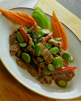

ผัดสะตอใส่กะปิ
อาหารประจำภาคใต้ที่ปรุงรสจากผักพื้นบ้านที่เป็นที่รู้จักกันดี ได้แก่ สะตอ ซึ่งไม่เพียงแต่คนภาคใต้เท่านั้นที่จะชอบรับประทาน สะตอยังเป็นที่ชื่นชอบของคนทั่วไปด้วย
สะตอแกะเมล็ด 300 กรัม
หมูติดมัน 50 กรัม
กุ้งชีแฮ้ 250 กรัม หรือ 10 ตัว
พริกชี้ฟ้าแดงหั่นตามยาว 10 กรัม
กระเทียม 10 กรัม
หอมแดง 20 กรัม
กะปิ 8 กรัม
น้ำปลา 8 กรัม
น้ำตาลทราย 8 กรัม
น้ำมะนาว 15 กรัม
น้ำมัน 45 กรัม
1. โขลกกระเทียม หอมแดง กะปิ ให้ละเอียด
2. ล้างหมูให้สะอาด หั่นชิ้นพอคำ
3. ล้างกุ้งชีแฮ้ตัดหัวออกปอกเปลือกไว้หาง ผ่าหลัง ชักเส้นดำออก
4. ตั้งกะทะใส่น้ำมัน ใส่เครื่องที่โขลก ผัดให้หอม ใส่หมู กุ้ง แล้วใส่สะตอ
5. ปรุงรสด้วยน้ำปลา น้ำตาล น้ำมะนาว ผัดพอสุกทั่ว ใส่พริกชี้ฟ้า ยกลง
อาหารที่ปรุงจากสะตอ จะมีรสชาติช่วยให้รับประทานอาหารได้มากขึ้น และบำรุงเส้นเอ็น เครื่องปรุงต่าง ๆ ช่วยกระตุ้นให้เจริญอาหาร